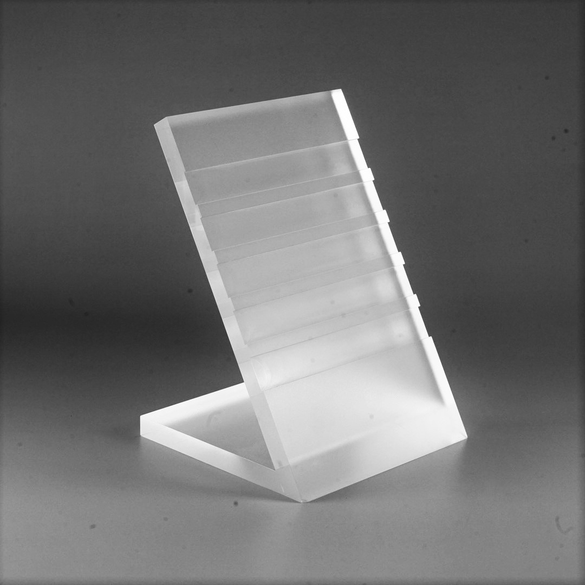
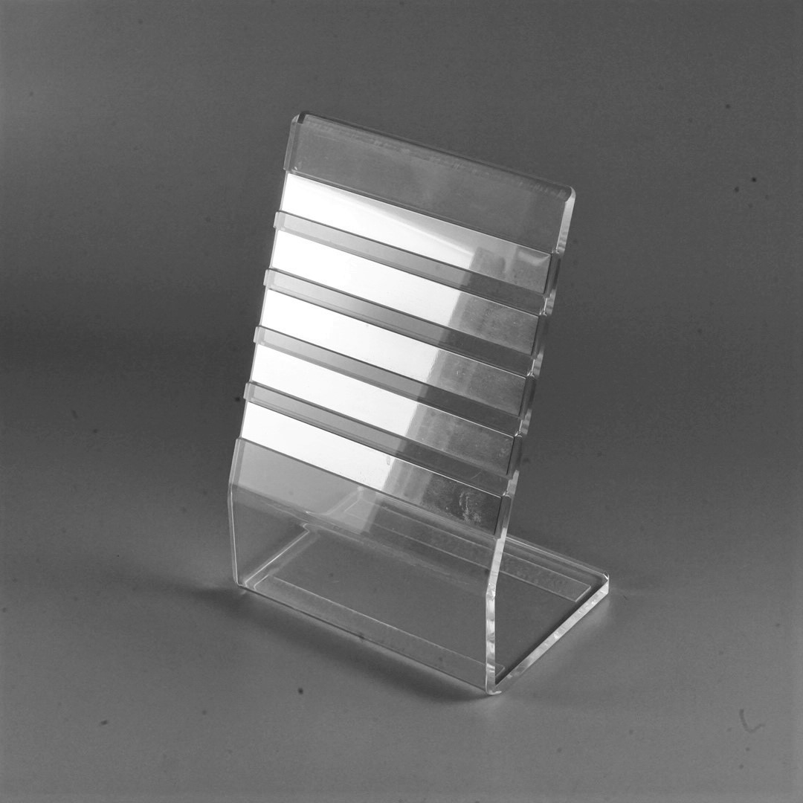

原始資料可辨識 BF-TP-PH0001-01 至 -06 影像；資料夾名稱同時標示壓克力製與金屬製方向
原始資料可辨識 BF-TP-PH0001-01 至 -06 影像；資料夾名稱同時標示壓克力製與金屬製方向。影像可作為產品形態證據，不延伸推定厚度、尺寸或正式材質牌號。
B2B RETAIL SIGNAGE
從桌上型價格牌、透明標示牌到貨架價格條，先確認展示位置、卡片尺寸與材質方向，再依 SKU、圖面與樣品確認正式規格。
詢問標示配件價格條與標示配件: 價格條與標示配件／Price Tag Holders & Signage Accessories／値札・表示用アクセサリー

原始資料可辨識 BF-TP-PH0001-01 至 -06 影像；資料夾名稱同時標示壓克力製與金屬製方向。影像可作為產品形態證據，不延伸推定厚度、尺寸或正式材質牌號。
適用於桌面展示台、貨架、櫃台與零售標示情境；實際固定方式依展示結構確認。

卡片尺寸、板厚、底座尺寸、材質、表面處理、MOQ、交期與客製範圍，依 SKU、圖面與樣品確認。
可以。請提供展示位置、標示卡尺寸、數量與現場照片，Big Fame 再依可核對的產品或圖面確認。
目前可公開的是 BF-TP-PH0001 系列影像與壓克力／金屬方向；正式尺寸、厚度與材質牌號尚需依 SKU 或圖面確認.
Related: 展示掛勾 · Modular display system case
依需求進入：採購入口 · 設計支援 · 技術與 CAD 資源